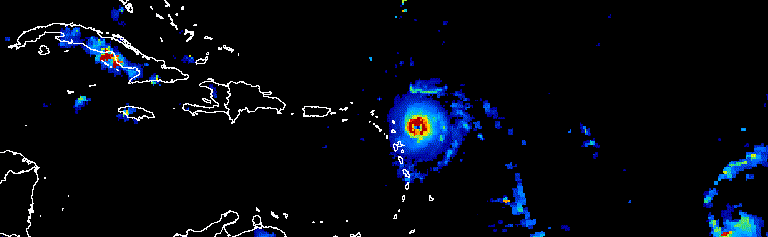

Your analysis is only as valuable as its impact. This module teaches you to communicate remote sensing results to non-technical audiences through animations, interactive maps, and web applications.
Learning objectives
- Create compelling animations that show environmental change over time.
- Design user-friendly interfaces with Earth Engine UI widgets.
- Deploy apps that let non-coders interact with your analysis.
- Apply science communication principles to visual products.
Why it matters
A beautiful analysis that stays in your code editor helps no one. Animations go viral on social media, apps empower stakeholders, and clear visualizations inform policy. Learning to share your work multiplies its impact.

Module overview
This module has two main components:
| Component | What You'll Create | Lab |
|---|---|---|
| Animations | GIFs and videos showing change over time | Lab 19 |
| Web Apps | Interactive applications with UI controls | Lab 20 |
Quick win: Your first animation
Run this to create a simple NDVI animation:
// Monthly NDVI for 2023
var roi = ee.Geometry.Point([-82.3, 29.6]).buffer(50000);
var collection = ee.ImageCollection('MODIS/061/MOD13A2')
.filterDate('2023-01-01', '2023-12-31')
.select('NDVI');
// Create visualization parameters
var visParams = {
min: 0,
max: 9000,
palette: ['brown', 'yellow', 'green'],
dimensions: 400
};
// Define video parameters
var videoArgs = {
region: roi,
framesPerSecond: 2,
crs: 'EPSG:4326'
};
// Print the animation URL
print(ui.Thumbnail(collection, visParams, videoArgs));
Map.centerObject(roi, 8);What you should see
An animated thumbnail showing vegetation greening up and browning down through 2023.
Key skills in this module
- Animation creation
- Using
ui.ThumbnailandExport.videoto create GIFs and MP4s - UI Widgets
- Buttons, sliders, dropdowns, text boxes for user interaction
- Panels and layouts
- Organizing widgets into intuitive interfaces
- Event handling
- Making your app respond to user actions (clicks, selections)
- App deployment
- Publishing and sharing your Earth Engine apps
Science communication principles
Effective public engagement follows these guidelines:
- Know your audience: A city council needs different information than scientists at a conference.
- Lead with the story: What changed? Why does it matter? What should people do?
- Simplify without dumbing down: Remove jargon, keep accuracy.
- Use color wisely: Intuitive palettes (blue=water, green=vegetation) reduce cognitive load.
- Add context: Include scale bars, legends, dates, and location references.
- Make it interactive: Let users explore rather than just observe.
Try it: Explore existing apps
Before building your own, explore these Earth Engine apps:
Notice what makes each effective: clear title, intuitive controls, meaningful visualizations.
Common mistakes
- Creating animations with too many frames (slow loading, large files).
- Using rainbow color palettes that are hard to interpret.
- Building complex UIs before testing the core analysis.
- Forgetting to add legends and titles to apps.
- Not testing apps on different screen sizes.
Quick self-check
- What function creates an animated thumbnail in Earth Engine?
- Why are animations effective for environmental communication?
- What should you consider about your audience when designing an app?